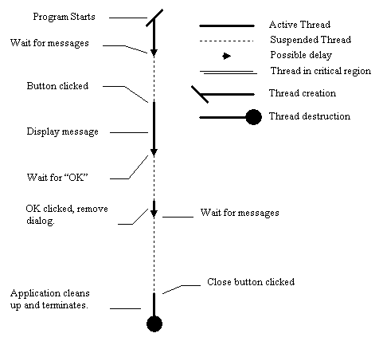
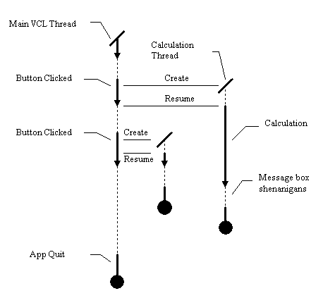
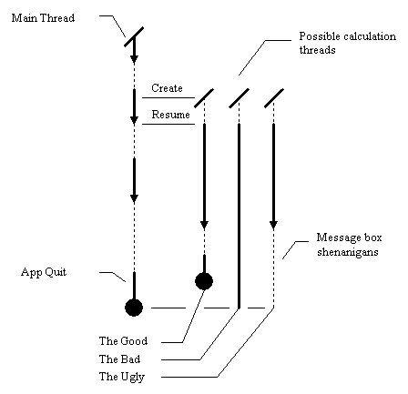

Chapter 2. Creating a thread in Delphi.
In this chapter:
A diagrammatic interlude.
Before looking into the details of creating a thread, and getting it to
execute code independently of the main application thread, it is necessary
to introduce a new sort of diagram illustrating the dynamics of thread
execution. This will aid us considerably when we start designing and creating
multithreaded programs. Consider this
simple application.
The application has one thread of execution: the main VCL thread. The
progress of this thread can be illustrated with a diagram showing the status
of the thread in the application over time. The progress of the thread
is represented by a line, and time flows down the page. I have included
a key in this diagram, which applies to all subsequent thread diagrams.

Note that this diagram does not indicate much about the algorithms executing.
Instead it illustrates the ordering of events over time, and the state
of the threads in the application between those times. The actual distance
between different points in the diagram is not particularly important,
but the vertical ordering of those points is. There are several pieces
of information to be gleaned from this diagram.
-
The thread in this application is not continually executing. There may
be long periods of time where it receives no external stimulus, and is
not carrying out any calculations or operations at all. The memory and
resources occupied by the application exist, and the window is still on
the screen, but none of its code is executing on the CPU.
-
The application is started, and the main thread executes. Once it has created
the main window, it has no more work to do, and it drops into a piece of
code in the VCL known as the application message loop that queries the
operating system for more messages. If there are no more messages to be
processed, the operating system suspends the thread, and the thread
is now suspended.
-
At some later point, the user clicks on the button to display the text
message. The operating system wakes up (or resumes) the main thread,
and gives it a message indicating that a button has been clicked. The main
thread is now active again.
-
This resume - suspend process occurs again several times. I have illustrated
a wait for user confirmation to close the message box, and a wait for the
close button to be clicked. In practice, many other messages might be received.
Our first non-VCL thread.
Although the Win32 API provides comprehensive multithreading support, when
it comes to the creation and destruction of threads, the VCL has a useful
class, TThread, which abstracts away many of the technicalities of creating
a thread, provides some useful simplifications, and tries to prevent the
programmer from falling into some of the more unpleasant traps that this
new discipline provides. I recommend its use. The Delphi help files provide
reasonable guidance when creating a thread class, so I won't mention much
about the sequence of menu actions required to create a thread apart from
suggesting that the reader select File | New... and then
choose
Thread Object.
This particular example consists of a program which calculates whether
a particular number is prime or not. It contains two units, one with a
conventional form, and one with a thread object. It more or less works,
but has some decidedly unpleasant quirks, which illustrate some of the
basic problems which multithreaded programmers face. We will discuss ways
of circumventing these problems later on. Here
is the source of the form, and here
is the source of the thread object.
What exactly does this
program do?
Each time the "Spawn" button is clicked, the program creates a new thread
object, initializes some fields in the object, and then sets the thread
on its way. Depending on the size of the input number, the thread grinds
away calculating whether the number is prime, and once it has finished
the calculation, the thread displays a message box, indicating whether
the number is prime. These threads are concurrent, whether you have a uniprocessor
or multiprocessor machine; from the point of view of the user, they execute
simultaneously. In addition, this program does not limit the number of
threads created. As a result, you can demonstrate that there is true concurrency
in the following manner:
-
Since I have commented out an exit statement in the prime number determination
routine, the time taken for the thread to run is roughly proportional to
the size of its input. I have found that with an argument of about 2^24,
the thread takes about 10-20 seconds to complete. Find a value that produces
a similar delay for your machine.
-
Run the program, enter in your large number, and click the button.
-
Immediately enter in a small number (say 42) and click the button again.
You will notice that the result for the small number is produced before
the result for the large number, even though we started the large number
first. The diagram below illustrates the situation.

Issues, problems
and surprises with our first threads.
At this point the issue of synchronization rears its ugly head. Once the
main thread has called Resume on a "worker" thread, the main program thread
cannot assume anything about the state of the worker thread and vice versa.
It is entirely possible that the worker thread might complete execution
before the progress of the main VCL thread has moved on by one statement.
In fact, for fairly small inputs that take less than 1/20th of a second
to calculate, it is fairly likely. Similarly, the worker thread cannot
assume anything about the state of progress of the main thread. It's all
up to the mercy of the Win32 scheduler. There are three basic "fun factors"
that one encounters: Start-up issues, Communication issues,
and Termination issues.
Start-up issues.
Delphi makes dealing with thread start-up easy. Before getting a child
thread to execute, one often wants to set up some initial state in the
thread. By creating the thread suspended (an argument to the constructor)
one can ensure that none of the code in the thread executes until the thread
is resumed. This means that the main VCL thread can safely read and modify
data in the TThread object, with the guarantee that it will be updated
and valid by the time the child thread gets round to executing.
In the case of this program, the "FreeOnTerminate" and "TestNumber"
properties of the thread are set before the thread starts executing.
If this was not the case, then the behaviour of the thread would be undefined.
If you don't want to create threads suspended, then you simply move the
start-up problems into the next category: communication issues.
Communication issues.
These occur when you have two threads which are both running, and you need
to communicate between them in any way, shape or form. This program dodges
the issue, by simply not having any communication at all between separate
threads. Suffice to say at this point, that unless you protect all
operations on shared data (for an adequate definition of "protect"), your
program is quite likely to be non-deterministic. If you do not have adequate
synchronization or concurrency control, the following are no-no's:
-
Accessing any form of shared resource between two threads.
-
Playing with thread unsafe parts of the VCL in a non-VCL thread.
-
Attempting to do graphics operations in a separate thread.
Even doing things as simple as having two threads accessing a shared integer
variable can result in complete disaster, and unsynchronized access to
shared resources or VCL calls will result in many hours of fraught debugging,
considerable confusion, and eventual consignment to the nearest mental
hospital. Until you have learnt the appropriate techniques in later chapters,dDon't
do it.
The good news? You can do all three of the above if you use the correct
mechanisms for controlling concurrency, and it's not even that hard! We
will be looking at a simple way of solving communication issues via the
VCL in the next chapter, and more elegant (but complicated) methods later
on.
Termination issues.
Threads, just like any other Delphi object, involve memory and resource
allocation, so it should come as no surprise to learn that it is important
to handle thread termination gracefully, something that this example program
fails to do. There are two possible approaches to the deallocation problem.
The first is to let the thread handle the problem itself. This is mainly
used for threads that either a) Communicate the results of thread execution
back to the main VCL thread before termination. or b) Do not contain any
information useful to other threads at termination time. In these cases,
the programmer can set the "FreeOnTerminate" flag in the thread object,
and it will dispose of itself when it has finished.
The second is to have the main VCL thread read data from the worker
thread object when it has finished, and then dispose of the worker thread.
This is covered later in Chapter 4.
I have side-stepped the issue of communicating results back to the main
thread by having the child thread present the answer to the user via a
call to "ShowMessage". This does not involve communication with the main
VCL thread, and the ShowMessage call happens to be thread safe (by and
large), so the VCL stays happy. As a result of this, I can use the
first approach to Thread deallocation, and let the thread dispose of itself.
Despite this, the example program illustrates one nasty feature of having
threads clean up after themselves:

As you can see, there are two things that can happen. The first is that
we try to exit the program whilst the thread is still active and calculating.
The second is that we try to exit the program whilst it is suspended. The
first case is fairly benign: the application quits without consulting the
thread. The Delphi and Windows cleanup code make this fairly clean. The
second is not so pretty since the thread is suspended somewhere in the
bowels of the Win32 messaging subsystem. As it turns out, Delphi appears
to do a good clean-up job under both circumstances. However, it is less
than immaculate programming style to force-quit a thread without reference
to what it is currently doing. For example, the worker threads might be
in the process of writing to a file. If the user quits the program before
they have finished, then the file is corrupted. This is why it is a good
idea to have child or worker threads perform a co-ordinated exit with the
main VCL thread even if no data transfer is required: a clean thread and
process termination is possible. Chapter 4 discusses solutions to this
problem.
[Contents] [Previous][Next]
© Martin Harvey
2000.